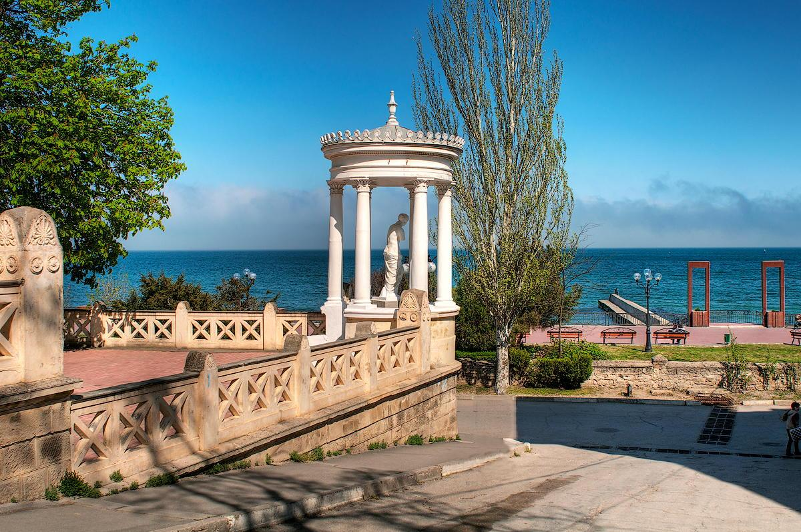

Дата та місце народження: 24 квітня 2003 року, м. Суми
Освіта: НТУУ "КПІ", м. Київ; Липоводолинська СШ І-ІІІ ступенів, Сумська обл.
Хоббі:
Улюблені книги:
Улюблене місце: Феодосія
Феодосія – курортне місто на березі Чорного моря у південно-східній частині Криму. У Феодосії багате історичне минуле – курорт має велику екскурсійну програму. Обов'язкові для відвідування архітектурні символи міста – Фортеця Кафа і Вежа часів правління генуезців, а музей стародавності Феодосії вважається одним із найстаріших у Європі. Місто нерозривно пов'язане з цілою плеядою відомих представників культури та мистецтва – Айвазовським, Гріном, Цвєтаєвою, Волошиним, Мухіною.
